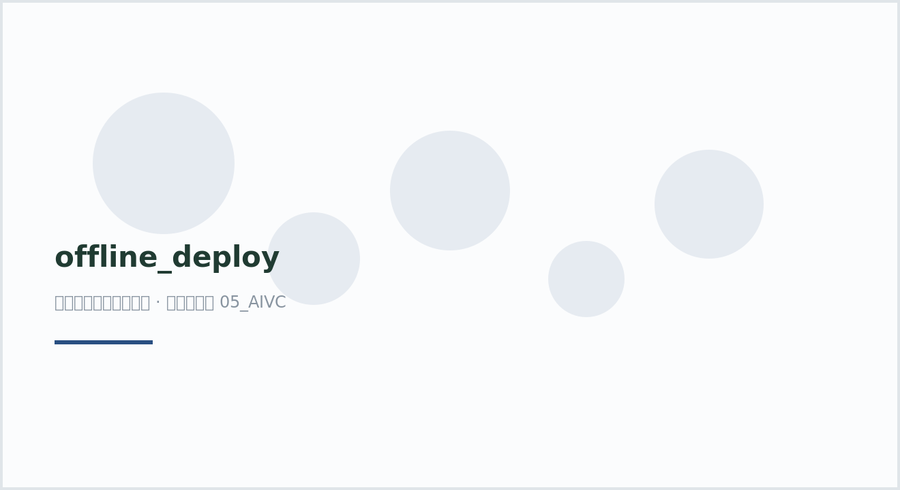

plot66 · 代码 5 · 图 0 · 笔记 1 · 代码库专题
offline_deploy
代码库整理的专题，README 见原始目录。

offline_deploy（自动生成占位图）

图源：（自动生成占位图）
分析代码
8 个源码文件，按目录顺序；本机绝对路径已替换为 ~。 代码可复制，但需要按自己的数据改路径与参数。
build/build_py.sh
#!/usr/bin/env bash
set -euo pipefail
BASE=~/hz_代码教程/05_AIVC/offline_deploy
ENV=$BASE/build/py
export PIP_CACHE_DIR=$BASE/build/.pipcache
export CONDA_PKGS_DIRS=$BASE/build/.condapkgs
echo "=== [1/4] conda create py3.12 ==="
conda create -y -p "$ENV" -c conda-forge --override-channels python=3.12 pip -q
echo "=== [2/4] torch 2.6.0+cu124 ==="
"$ENV/bin/python" -m pip install -q --upgrade pip wheel setuptools
"$ENV/bin/python" -m pip install "torch==2.6.0" "torchvision==0.21.0" --index-url https://download.pytorch.org/whl/cu124
echo "=== [3/4] sc stack ==="
"$ENV/bin/python" -m pip install -q \
scanpy anndata squidpy scvi-tools cell2location \
transformers huggingface_hub sentence-transformers \
lightning torchmetrics scikit-learn umap-learn \
leidenalg igraph matplotlib seaborn tqdm \
jupyterlab ipykernel openpyxl h5py zarr pooch
echo "=== [4/4] verify ==="
"$ENV/bin/python" - <<'PY'
import torch, scanpy, squidpy, scvi, cell2location, transformers, lightning, anndata
print("torch", torch.__version__, "cuda-build", torch.version.cuda, "cuda_avail", torch.cuda.is_available())
print("scanpy", scanpy.__version__, "| anndata", anndata.__version__)
print("squidpy", squidpy.__version__, "| scvi", scvi.__version__, "| cell2location", cell2location.__version__)
print("transformers", transformers.__version__, "| lightning", lightning.__version__)
PY
echo "BUILD_PY_OK"
build/build_py3.sh
#!/usr/bin/env bash
set -euo pipefail
BASE=~/hz_代码教程/05_AIVC/offline_deploy
ENV=$BASE/build/py
export PIP_CACHE_DIR=$BASE/build/.pipcache
export PYTHONNOUSERSITE=1
export PIP_INDEX_URL=https://mirrors.aliyun.com/pypi/simple
export PIP_TRUSTED_HOST=mirrors.aliyun.com
echo "=== [3/4] sc stack via aliyun mirror ==="
"$ENV/bin/python" -m pip install -q \
scanpy anndata squidpy scvi-tools cell2location \
transformers huggingface_hub sentence-transformers \
lightning torchmetrics scikit-learn umap-learn \
leidenalg igraph matplotlib seaborn tqdm \
jupyterlab ipykernel openpyxl h5py zarr pooch
echo "=== [4/4] verify ==="
"$ENV/bin/python" - <<'PY'
import torch, scanpy, squidpy, scvi, cell2location, transformers, lightning, anndata, numpy
print("torch", torch.__version__, "cuda-build", torch.version.cuda, "cuda_avail", torch.cuda.is_available())
print("numpy", numpy.__version__)
print("scanpy", scanpy.__version__, "| anndata", anndata.__version__)
print("squidpy", squidpy.__version__, "| scvi", scvi.__version__, "| cell2location", cell2location.__version__)
print("transformers", transformers.__version__, "| lightning", lightning.__version__)
PY
echo "BUILD_PY_OK"
build/build_r.sh
#!/usr/bin/env bash
set -euo pipefail
BASE=~/hz_代码教程/05_AIVC/offline_deploy
ENV=$BASE/build/r
export CONDA_PKGS_DIRS=$BASE/build/.condapkgs
export R_LIBS_USER=""
echo "=== [1/3] conda create r-base 4.4 + toolchain ==="
conda create -y -p "$ENV" -c conda-forge --override-channels \
r-base=4.4 r-remotes make cmake pkg-config gxx_linux-64 gfortran_linux-64 \
libxml2 openssl curl libgit2 hdf5 gsl boost-cpp udunits2 proj geos gdal \
sqlite fftw libpng libtiff libjpeg-turbo cairo fontconfig freetype harfbuzz fribidi \
pcre2 zlib bzip2 xz readline ncurses -q
echo "=== [2/3] CRAN via Posit P3M jammy binaries ==="
"$ENV/bin/Rscript" -e '
options(repos = c(P3M = "https://packagemanager.posit.co/cran/__linux__/jammy/latest"),
Ncpus = 8)
install.packages(c("BiocManager","remotes","data.table","hdf5r","NMF",
"Seurat","SeuratObject","ggplot2","patchwork","dplyr"))
'
echo "=== [3/3] Bioconductor ==="
"$ENV/bin/Rscript" -e '
options(Ncpus = 8)
BiocManager::install(c("SPOTlight","spatialLIBD","SingleCellExperiment","SpatialExperiment",
"scran","scater","scuttle","glmGamPoi","batchelor","rhdf5"),
update = FALSE, ask = FALSE)
'
echo "=== verify ==="
"$ENV/bin/Rscript" -e '
for (p in c("Seurat","SPOTlight","spatialLIBD","SingleCellExperiment","scran","scater")) {
ok <- suppressWarnings(suppressMessages(require(p, character.only=TRUE, quietly=TRUE)))
cat(sprintf("%-24s %s\n", p, if (ok) as.character(packageVersion(p)) else "MISSING"))
}
cat(R.version.string, "\n")
'
echo "BUILD_R_OK"
build/build_r2.sh
#!/usr/bin/env bash
set -euo pipefail
BASE=~/hz_代码教程/05_AIVC/offline_deploy
ENV=$BASE/build/r
export PATH="$ENV/bin:$PATH"
export CC=$ENV/bin/x86_64-conda-linux-gnu-cc
export CXX=$ENV/bin/x86_64-conda-linux-gnu-g++
export FC=$ENV/bin/x86_64-conda-linux-gnu-gfortran
export CFLAGS="-O2 -fPIC -I$ENV/include"
export CXXFLAGS="-O2 -fPIC -I$ENV/include"
export LDFLAGS="-L$ENV/lib -Wl,-rpath,$ENV/lib"
export CPPFLAGS="-I$ENV/include"
export PKG_CONFIG_PATH="$ENV/lib/pkgconfig"
export R_LIBS_USER=""
echo "=== CRAN via P3M (binaries) ==="
"$ENV/bin/Rscript" -e '
options(repos = c(P3M = "https://packagemanager.posit.co/cran/__linux__/jammy/latest"),
Ncpus = 8, timeout = 600)
install.packages(c("BiocManager","remotes","data.table","hdf5r","NMF",
"Seurat","SeuratObject","ggplot2","patchwork","dplyr"))
cat("CRAN done\n")
'
echo "=== Bioconductor ==="
"$ENV/bin/Rscript" -e '
options(Ncpus = 8, timeout = 600,
BioC_mirror = "https://mirrors.tuna.tsinghua.edu.cn/bioconductor",
BIOCONDUCTOR_CONFIG_FILE = "https://mirrors.tuna.tsinghua.edu.cn/bioconductor/config.yaml")
BiocManager::install(c("SPOTlight","spatialLIBD","SingleCellExperiment","SpatialExperiment",
"scran","scater","scuttle","glmGamPoi","batchelor","rhdf5"),
update = FALSE, ask = FALSE)
cat("Bioc done\n")
'
transfer/install/03_restore_envs.sh
#!/usr/bin/env bash
# ============================================================
# 步骤 3/3：在 WSL 内恢复 conda 环境（离线）
# 用法：bash 03_restore_envs.sh /mnt/d/transfer
# ============================================================
set -euo pipefail
SRC="${1:-/mnt/d/transfer}"
echo "== 恢复 py 环境 =="
mkdir -p /opt/envs/py
tar -xzf "$SRC/envs/py-linux-64.tar.gz" -C /opt/envs/py
/opt/envs/py/bin/conda-unpack
echo "py 环境恢复完成"
echo "== 恢复 r 环境 =="
mkdir -p /opt/envs/r
tar -xzf "$SRC/envs/r-linux-64.tar.gz" -C /opt/envs/r
/opt/envs/r/bin/conda-unpack
echo "r 环境恢复完成"
echo "== 模型目录 =="
mkdir -p /opt/models
if [ -d "$SRC/models" ]; then
cp -r "$SRC/models/." /opt/models/
fi
echo "== 写激活脚本 =="
cat > /opt/envs/activate-py.sh <<'EOF'
source /opt/envs/py/bin/activate
export HF_HOME=/opt/models/hf_home
export HF_HUB_OFFLINE=1
export TRANSFORMERS_OFFLINE=1
EOF
cat > /opt/envs/activate-r.sh <<'EOF'
source /opt/envs/r/bin/activate
EOF
chmod +x /opt/envs/activate-py.sh /opt/envs/activate-r.sh
echo "== 自检 =="
/opt/envs/py/bin/python -c "import torch,scanpy,squidpy,scvi,cell2location,transformers; print('py OK', torch.__version__)"
/opt/envs/r/bin/Rscript -e "suppressMessages(library(Seurat)); cat('r OK\n')"
echo "全部完成。用 'source /opt/envs/activate-py.sh' 进入 Python 环境。"
build/py/bin/jp.py
#!~/hz_代码教程/05_AIVC/offline_deploy/build/py/bin/python
import sys
import json
import argparse
from pprint import pformat
import jmespath
from jmespath import exceptions
def main():
parser = argparse.ArgumentParser()
parser.add_argument('expression')
parser.add_argument('-f', '--filename',
help=('The filename containing the input data. '
'If a filename is not given then data is '
'read from stdin.'))
parser.add_argument('--ast', action='store_true',
help=('Pretty print the AST, do not search the data.'))
args = parser.parse_args()
expression = args.expression
if args.ast:
# Only print the AST
expression = jmespath.compile(args.expression)
sys.stdout.write(pformat(expression.parsed))
sys.stdout.write('\n')
return 0
if args.filename:
with open(args.filename, 'r') as f:
data = json.load(f)
else:
data = sys.stdin.read()
data = json.loads(data)
try:
sys.stdout.write(json.dumps(
jmespath.search(expression, data), indent=4, ensure_ascii=False))
sys.stdout.write('\n')
except exceptions.ArityError as e:
sys.stderr.write("invalid-arity: %s\n" % e)
return 1
except exceptions.JMESPathTypeError as e:
sys.stderr.write("invalid-type: %s\n" % e)
return 1
except exceptions.UnknownFunctionError as e:
sys.stderr.write("unknown-function: %s\n" % e)
return 1
except exceptions.ParseError as e:
sys.stderr.write("syntax-error: %s\n" % e)
return 1
if __name__ == '__main__':
sys.exit(main())
build/py/lib/tclconfig.sh
# tclConfig.sh --
#
# This shell script (for sh) is generated automatically by Tcl's
# configure script. It will create shell variables for most of
# the configuration options discovered by the configure script.
# This script is intended to be included by the configure scripts
# for Tcl extensions so that they don't have to figure this all
# out for themselves.
#
# The information in this file is specific to a single platform.
# Tcl's version number.
TCL_VERSION='8.6'
TCL_MAJOR_VERSION='8'
TCL_MINOR_VERSION='6'
TCL_PATCH_LEVEL='.13'
# C compiler to use for compilation.
TCL_CC='x86_64-conda-linux-gnu-cc'
# -D flags for use with the C compiler.
TCL_DEFS='-DPACKAGE_NAME=\"tcl\" -DPACKAGE_TARNAME=\"tcl\" -DPACKAGE_VERSION=\"8.6\" -DPACKAGE_STRING=\"tcl\ 8.6\" -DPACKAGE_BUGREPORT=\"\" -DHAVE_SYS_TYPES_H=1 -DHAVE_SYS_STAT_H=1 -DHAVE_STDLIB_H=1 -DHAVE_STRING_H=1 -DHAVE_MEMORY_H=1 -DHAVE_STRINGS_H=1 -DHAVE_INTTYPES_H=1 -DHAVE_STDINT_H=1 -DHAVE_UNISTD_H=1 -DHAVE_SYS_PARAM_H=1 -DUSE_THREAD_ALLOC=1 -D_REENTRANT=1 -D_THREAD_SAFE=1 -DHAVE_PTHREAD_ATTR_SETSTACKSIZE=1 -DHAVE_PTHREAD_ATFORK=1 -DTCL_THREADS=1 -DTCL_CFGVAL_ENCODING=\"iso8859-1\" -DHAVE_ZLIB=1 -DMODULE_SCOPE=extern\ __attribute__\(\(__visibility__\(\"hidden\"\)\)\) -DHAVE_HIDDEN=1 -DHAVE_CAST_TO_UNION=1 -DTCL_SHLIB_EXT=\".so\" -DNDEBUG=1 -DTCL_CFG_OPTIMIZED=1 -DTCL_TOMMATH=1 -DMP_PREC=4 -D_LARGEFILE64_SOURCE=1 -DTCL_WIDE_INT_IS_LONG=1 -DHAVE_GETCWD=1 -DHAVE_MKSTEMP=1 -DHAVE_OPENDIR=1 -DHAVE_STRTOL=1 -DHAVE_WAITPID=1 -DHAVE_GETNAMEINFO=1 -DHAVE_GETADDRINFO=1 -DHAVE_FREEADDRINFO=1 -DHAVE_GAI_STRERROR=1 -DHAVE_STRUCT_ADDRINFO=1 -DHAVE_STRUCT_IN6_ADDR=1 -DHAVE_STRUCT_SOCKADDR_IN6=1 -DHAVE_STRUCT_SOCKADDR_STORAGE=1 -DHAVE_GETPWUID_R_5=1 -DHAVE_GETPWUID_R=1 -DHAVE_GETPWNAM_R_5=1 -DHAVE_GETPWNAM_R=1 -DHAVE_GETGRGID_R_5=1 -DHAVE_GETGRGID_R=1 -DHAVE_GETGRNAM_R_5=1 -DHAVE_GETGRNAM_R=1 -DHAVE_DECL_GETHOSTBYNAME_R=1 -DHAVE_GETHOSTBYNAME_R_6=1 -DHAVE_GETHOSTBYNAME_R=1 -DHAVE_DECL_GETHOSTBYADDR_R=1 -DHAVE_GETHOSTBYADDR_R_8=1 -DHAVE_GETHOSTBYADDR_R=1 -DHAVE_TERMIOS_H=1 -DHAVE_SYS_IOCTL_H=1 -DHAVE_SYS_TIME_H=1 -DTIME_WITH_SYS_TIME=1 -DHAVE_GMTIME_R=1 -DHAVE_LOCALTIME_R=1 -DHAVE_MKTIME=1 -DHAVE_TM_GMTOFF=1 -DHAVE_TIMEZONE_VAR=1 -DHAVE_STRUCT_STAT_ST_BLOCKS=1 -DHAVE_STRUCT_STAT_ST_BLKSIZE=1 -DHAVE_BLKCNT_T=1 -DHAVE_INTPTR_T=1 -DHAVE_UINTPTR_T=1 -DHAVE_SIGNED_CHAR=1 -DHAVE_LANGINFO=1 -DHAVE_MKSTEMPS=1 -DHAVE_FTS=1 -DHAVE_SYS_IOCTL_H=1 -DTCL_UNLOAD_DLLS=1 -DHAVE_CPUID=1 '
# TCL_DBGX used to be used to distinguish debug vs. non-debug builds.
# This was a righteous pain so the core doesn't do that any more.
TCL_DBGX=
# Default flags used in an optimized and debuggable build, respectively.
TCL_CFLAGS_DEBUG='-g'
TCL_CFLAGS_OPTIMIZE='-O2'
# Default linker flags used in an optimized and debuggable build, respectively.
TCL_LDFLAGS_DEBUG=''
TCL_LDFLAGS_OPTIMIZE=''
# Flag, 1: we built a shared lib, 0 we didn't
TCL_SHARED_BUILD=1
# The name of the Tcl library (may be either a .a file or a shared library):
TCL_LIB_FILE='libtcl8.6.so'
# Additional libraries to use when linking Tcl.
TCL_LIBS='-ldl -lz -lpthread -lm'
# Top-level directory in which Tcl's platform-independent files are
# installed.
TCL_PREFIX='~/hz_代码教程/05_AIVC/offline_deploy/build/py'
# Top-level directory in which Tcl's platform-specific files (e.g.
# executables) are installed.
TCL_EXEC_PREFIX='~/hz_代码教程/05_AIVC/offline_deploy/build/py'
# Flags to pass to cc when compiling the components of a shared library:
TCL_SHLIB_CFLAGS='-fPIC'
# Flags to pass to cc to get warning messages
TCL_CFLAGS_WARNING='-Wall -Wpointer-arith'
# Extra flags to pass to cc:
TCL_EXTRA_CFLAGS='-march=nocona -mtune=haswell -ftree-vectorize -fPIC -fstack-protector-strong -fno-plt -O2 -ffunction-sections -pipe -fno-merge-constants -isystem ~/hz_代码教程/05_AIVC/offline_deploy/build/py/include -fdebug-prefix-map=~/feedstock_root/build_artifacts/bld/rattler-build_tk_1787272857/work=/usr/local/src/conda/tk-8.6.13 -fdebug-prefix-map=~/hz_代码教程/05_AIVC/offline_deploy/build/py=/usr/local/src/conda-prefix -pipe -DNDEBUG -D_FORTIFY_SOURCE=2 -O2 -isystem ~/hz_代码教程/05_AIVC/offline_deploy/build/py/include'
# Base command to use for combining object files into a shared library:
TCL_SHLIB_LD='${CC} ${CFLAGS} ${LDFLAGS} -shared'
# Base command to use for combining object files into a static library:
TCL_STLIB_LD='${AR} cr'
# Either '$LIBS' (if dependent libraries should be included when linking
# shared libraries) or an empty string. See Tcl's configure.in for more
# explanation.
TCL_SHLIB_LD_LIBS='${LIBS}'
# Suffix to use for the name of a shared library.
TCL_SHLIB_SUFFIX='.so'
# Library file(s) to include in tclsh and other base applications
# in order to provide facilities needed by DLOBJ above.
TCL_DL_LIBS='-ldl'
# Flags to pass to the compiler when linking object files into
# an executable tclsh or tcltest binary.
TCL_LD_FLAGS='-Wl,-O2 -Wl,--sort-common -Wl,--as-needed -Wl,-z,relro -Wl,-z,now -Wl,--disable-new-dtags -Wl,--gc-sections -Wl,--allow-shlib-undefined -Wl,-rpath,~/hz_代码教程/05_AIVC/offline_deploy/build/py/lib -Wl,-rpath-link,~/hz_代码教程/05_AIVC/offline_deploy/build/py/lib -L~/hz_代码教程/05_AIVC/offline_deploy/build/py/lib -Wl,--export-dynamic '
# Flags to pass to cc/ld, such as "-R /usr/local/tcl/lib", that tell the
# run-time dynamic linker where to look for shared libraries such as
# libtcl.so. Used when linking applications. Only works if there
# is a variable "LIB_RUNTIME_DIR" defined in the Makefile.
TCL_CC_SEARCH_FLAGS='"-Wl,-rpath,${LIB_RUNTIME_DIR}"'
TCL_LD_SEARCH_FLAGS='"-Wl,-rpath,${LIB_RUNTIME_DIR}"'
# Additional object files linked with Tcl to provide compatibility
# with standard facilities from ANSI C or POSIX.
TCL_COMPAT_OBJS=''
# Name of the ranlib program to use.
TCL_RANLIB='x86_64-conda-linux-gnu-ranlib'
# -l flag to pass to the linker to pick up the Tcl library
TCL_LIB_FLAG='-ltcl8.6'
# String to pass to linker to pick up the Tcl library from its
# build directory.
TCL_BUILD_LIB_SPEC='-L~/hz_代码教程/05_AIVC/offline_deploy/build/py/lib -ltcl8.6'
# String to pass to linker to pick up the Tcl library from its
# installed directory.
TCL_LIB_SPEC='-L~/hz_代码教程/05_AIVC/offline_deploy/build/py/lib -ltcl8.6'
# String to pass to the compiler so that an extension can
# find installed Tcl headers.
TCL_INCLUDE_SPEC='-I~/hz_代码教程/05_AIVC/offline_deploy/build/py/include'
# Indicates whether a version numbers should be used in -l switches
# ("ok" means it's safe to use switches like -ltcl7.5; "nodots" means
# use switches like -ltcl75). SunOS and FreeBSD require "nodots", for
# example.
TCL_LIB_VERSIONS_OK='ok'
# String that can be evaluated to generate the part of a shared library
# name that comes after the "libxxx" (includes version number, if any,
# extension, and anything else needed). May depend on the variables
# VERSION and SHLIB_SUFFIX. On most UNIX systems this is
# ${VERSION}${SHLIB_SUFFIX}.
TCL_SHARED_LIB_SUFFIX='${VERSION}.so'
# String that can be evaluated to generate the part of an unshared library
# name that comes after the "libxxx" (includes version number, if any,
# extension, and anything else needed). May depend on the variable
# VERSION. On most UNIX systems this is ${VERSION}.a.
TCL_UNSHARED_LIB_SUFFIX='${VERSION}.a'
# Location of the top-level source directory from which Tcl was built.
# This is the directory that contains a README file as well as
# subdirectories such as generic, unix, etc. If Tcl was compiled in a
# different place than the directory containing the source files, this
# points to the location of the sources, not the location where Tcl was
# compiled.
TCL_SRC_DIR='~/hz_代码教程/05_AIVC/offline_deploy/build/py/include'
# List of standard directories in which to look for packages during
# "package require" commands. Contains the "prefix" directory plus also
# the "exec_prefix" directory, if it is different.
TCL_PACKAGE_PATH='{~/hz_代码教程/05_AIVC/offline_deploy/build/py/lib} '
# Tcl supports stub.
TCL_SUPPORTS_STUBS=1
# The name of the Tcl stub library (.a):
TCL_STUB_LIB_FILE='libtclstub8.6.a'
# -l flag to pass to the linker to pick up the Tcl stub library
TCL_STUB_LIB_FLAG='-ltclstub8.6'
# String to pass to linker to pick up the Tcl stub library from its
# build directory.
TCL_BUILD_STUB_LIB_SPEC='-L~/hz_代码教程/05_AIVC/offline_deploy/build/py/lib -ltclstub8.6'
# String to pass to linker to pick up the Tcl stub library from its
# installed directory.
TCL_STUB_LIB_SPEC='-L~/hz_代码教程/05_AIVC/offline_deploy/build/py/lib -ltclstub8.6'
# Path to the Tcl stub library in the build directory.
TCL_BUILD_STUB_LIB_PATH='~/hz_代码教程/05_AIVC/offline_deploy/build/py/lib/libtclstub8.6.a'
# Path to the Tcl stub library in the install directory.
TCL_STUB_LIB_PATH='~/hz_代码教程/05_AIVC/offline_deploy/build/py/lib/libtclstub8.6.a'
# Flag, 1: we built Tcl with threads enabled, 0 we didn't
TCL_THREADS=1
build/py/lib/tclooconfig.sh
# tclooConfig.sh --
#
# This shell script (for sh) is generated automatically by TclOO's configure
# script, or would be except it has no values that we substitute. It will
# create shell variables for most of the configuration options discovered by
# the configure script. This script is intended to be included by TEA-based
# configure scripts for TclOO extensions so that they don't have to figure
# this all out for themselves.
#
# The information in this file is specific to a single platform.
# These are mostly empty because no special steps are ever needed from Tcl 8.6
# onwards; all libraries and include files are just part of Tcl.
TCLOO_LIB_SPEC=""
TCLOO_STUB_LIB_SPEC=""
TCLOO_INCLUDE_SPEC=""
TCLOO_PRIVATE_INCLUDE_SPEC=""
TCLOO_CFLAGS=""
TCLOO_VERSION=1.1.0